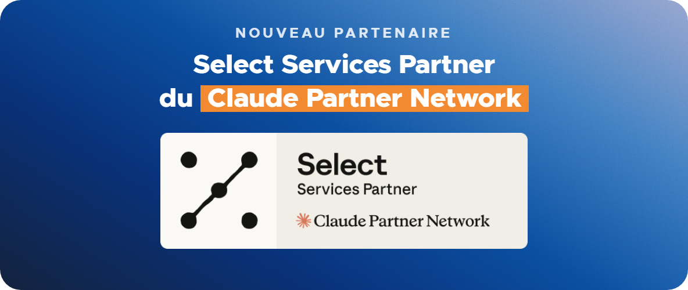
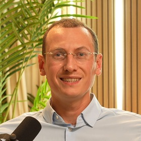

| Bonjour, |
| Je tenais à vous partager une étape importante pour AI Partners : nous avons obtenu le statut de partenaire Select du Claude Partner Network (Services Track), le programme d'Anthropic dédié aux sociétés qui déploient Claude, powered by Anthropic, chez leurs clients. |
| Ce statut valide une pratique Claude éprouvée sur le terrain : des équipes certifiées, des clients en production et des cas publics. Cette reconnaissance vient consacrer deux années de travail aux côtés de nos clients, et une conviction qui ne m'a pas quitté depuis la création d'AI Partners : la valeur de l'IA se joue en production, au-delà des pilotes. |
Une expertise reconnue, et déjà à l'œuvre chez nos clients |
12 experts certifiés par Anthropic | | 5 déploiements clients validés par Anthropic | | 3 références publiques |
|
Des experts qui pratiquent. Nos consultants et ingénieurs utilisent Claude au quotidien, y compris Claude Code dans notre propre ingénierie. Des projets en production. Nos 5 déploiements clients validés par Anthropic vont au-delà des POC et des expérimentations. |
|
| Des résultats mesurés, sur 3 références publiques : |
L'Oréal 150 experts tech et produit formés en trois jours de build. | | ISAGRI Une chaîne de développement en production sur Claude Code, désormais utilisée au quotidien par les équipes produit. | | Trench Group 12 applications construites en trois jours, dont 3 en production, qui économisent plus de 200 heures de travail par an. |
|
Ce qui ne change pas : notre indépendance |
| Ce statut renforce notre expertise sur Claude, sans rien changer à notre position. AI Partners reste indépendant et agnostique. Nous sommes également partenaires d'OpenAI, de Dust et de Google. |
 OpenAI Select Partner | | Dust Partner | | Google Cloud Partner |
|
| Nous ne percevons aucune commission d'apport de la part des éditeurs. Notre seul critère reste votre besoin réel : nous vous recommandons la solution la plus adaptée, y compris quand ce n'est pas Claude. Je m'y engage personnellement. |
Ce que nous pouvons faire pour vous |
Stratégie et gouvernance : identifier les cas d'usage où l'IA crée réellement de la valeur, et poser le cadre de sécurité et de gouvernance pour passer à l'échelle. Build et production : concevoir, déployer et industrialiser des agents au cœur de vos processus métier. Déploiement de Claude Enterprise et Claude Team : configurer les accès, les niveaux d'usage et l'administration, puis faire adopter l'outil par vos équipes. Sur certains déploiements Claude Enterprise, Anthropic peut cofinancer une partie de l'accompagnement à l'adoption, sous réserve d'éligibilité déterminée par Anthropic. Nous vous indiquons si votre projet peut en bénéficier. Adoption et montée en compétences : des programmes de build où vos équipes construisent leurs propres usages, de Claude Cowork aux équipes de développement sur Claude Code. |
|
Parlons de vos projets |
| Vous avez un pilote à faire passer en production, un déploiement Claude à réussir, ou un cas d'usage à cadrer ? Je vous propose un échange de 30 minutes avec l'un de nos experts. |
| Répondez simplement à ce mail → |
| Merci pour votre confiance. C'est avec vous que cette étape s'est construite. |
 | Thomas Spitz
Co-founder & CEO, AI Partners |
|